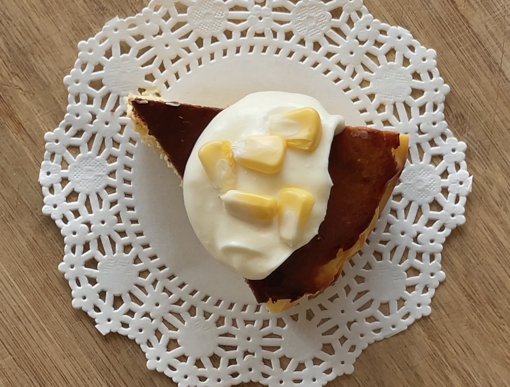
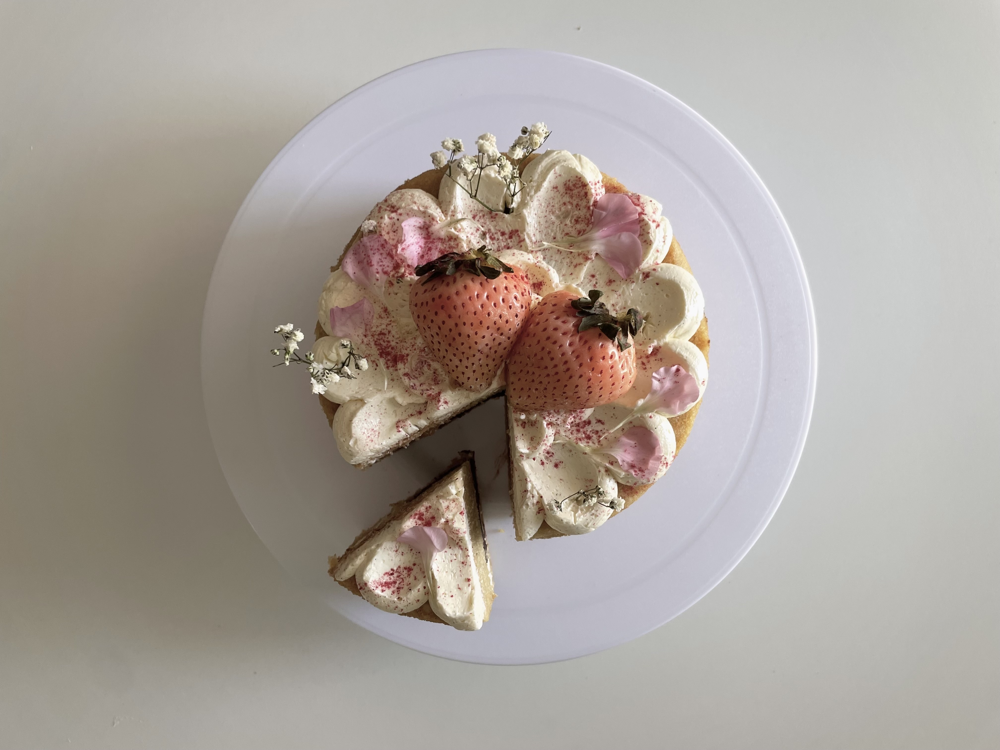
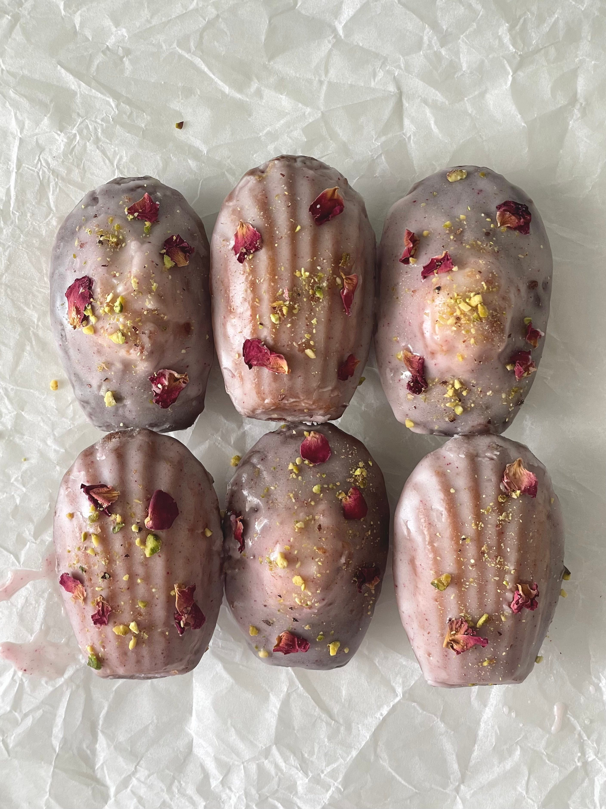
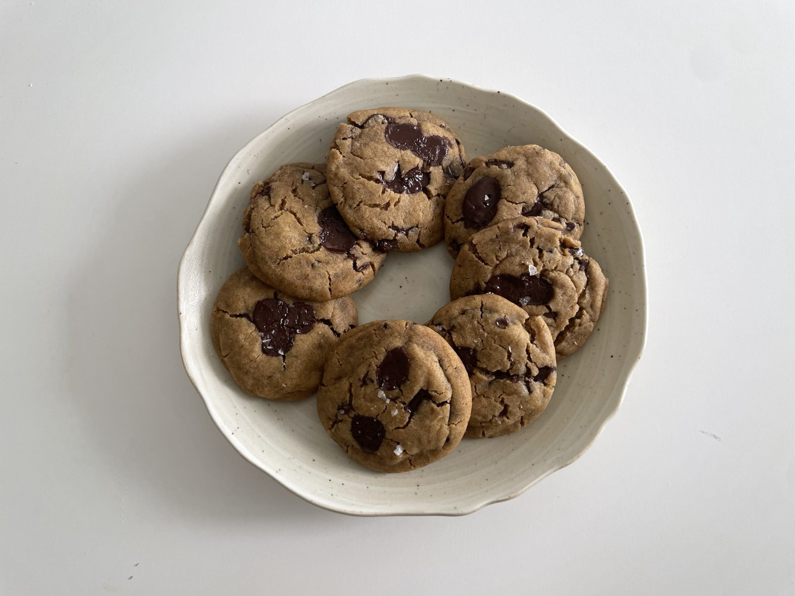
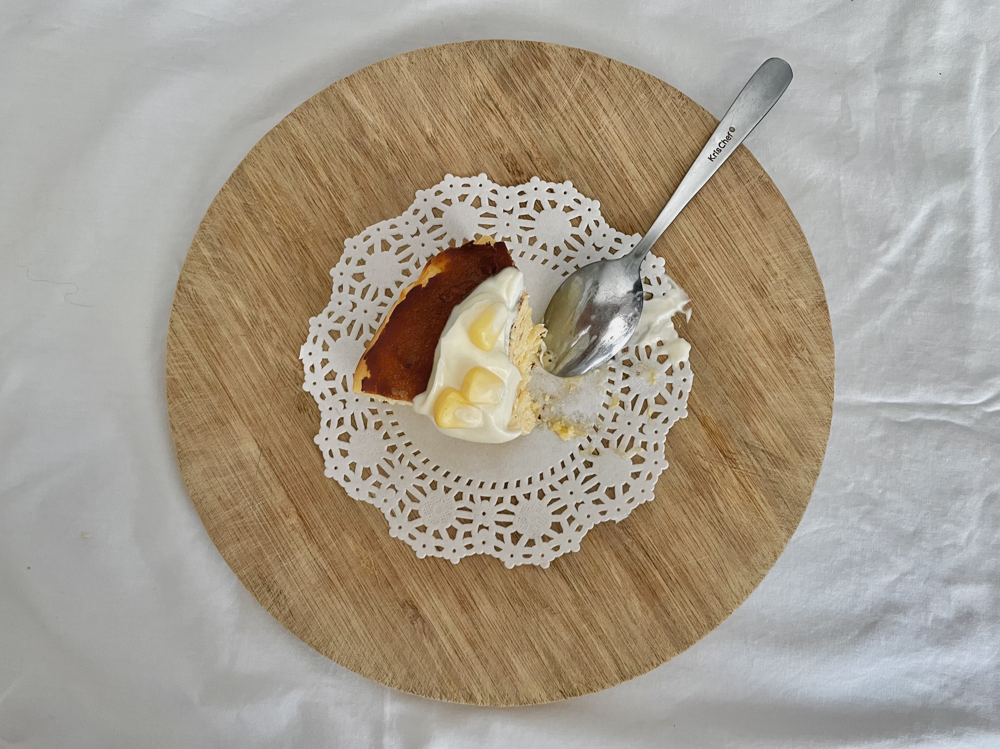
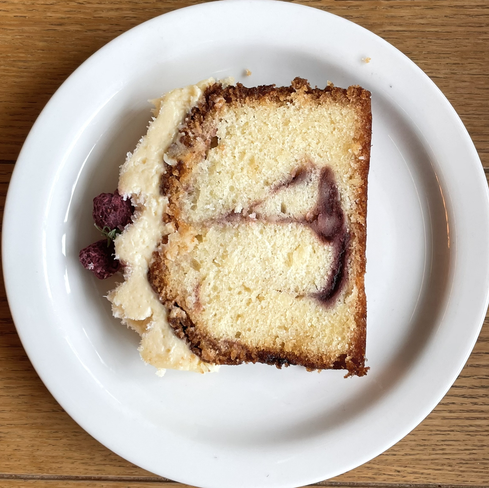

Baking journal and recipes
Thoughtful bakes, nostalgic flavours, and recipes worth keeping.
orchidsinovens is a baking journal where classic recipes meet playful reinterpretations and original dessert creations.

Free recipe
Subscribe to get a free recipe.
Join me on Substack and I'll send over a free recipe, plus the occasional baking notes, new launches and recipe drops.
Subscribe on Substack to receive the free recipe by email.
Subscribe for the free recipeFeatured recipes
Bake from the archive

Recipe
Persian Love Cake Madeleines
Rose-pistachio madeleines inspired by Persian love cakes.
View recipe
Substack
Read the Journal
Longer reflections on baking, memory, growing up, and everything in between.
Read on Substack
About
Hello! I'm Naya.
I started orchidsinovens as a place to document the recipes I couldn't stop thinking about - whether they're timeless classics or desserts inspired by flavours I grew up with. I love taking familiar ideas and giving them a new twist, then testing them until they're recipes worth sharing.
Here you'll find recipes, baking notes, and the occasional story behind the desserts. I hope they inspire you to bake something delicious, or simply slow down for a moment.

Recipes, baking notes, and soft launches at @orchidsinovens.